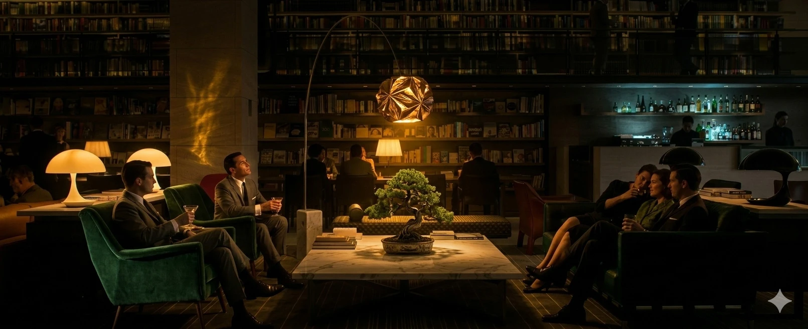
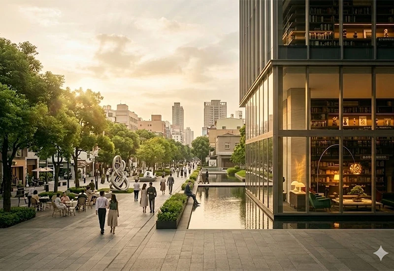
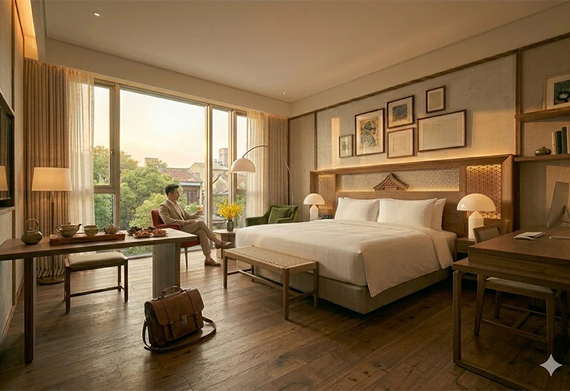
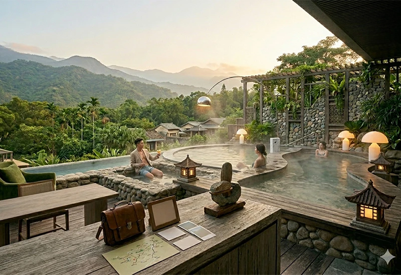

12大住宿注意事項
1.確認訂房資訊
入住前請再次確認訂單內容,包括入住日期、房型、人數及付款狀態,避免因資料錯誤影響住宿安排。
2.留意入住與退房時間
各住宿業者規定不同,請事先確認入住與退房時間,避免過早或延誤影響行程安排與額外費用產生。
3.攜帶有效證件
辦理入住時通常需出示身分證件或護照,建議提前準備,以加快入住流程並避免不必要困擾。
4.貴重物品妥善保管
建議將貴重物品隨身攜帶或使用房內保險箱,外出時請確認門窗已鎖,確保個人財物安全。
5.了解取消與改期政策
不同住宿的取消規定不同,建議事先閱讀相關條款,以避免臨時變動產生額外費用。
6.注意住宿環境安全
入住時可留意逃生出口與消防設備位置,熟悉環境動線,以便遇到緊急狀況時能迅速應對。
7.遵守住宿規範
請配合住宿場所相關規定,如禁菸、寵物限制或安靜時間等,以維護良好住宿品質與環境。
8.檢查房內設備
入住後可先檢查房間設備是否正常,如空調、熱水、電器等,若有問題應立即向櫃檯反映。
9.注意個人衛生與健康
建議自備個人用品,並保持良好衛生習慣,外出回房後可適度清潔雙手,確保健康安全。
10.避免過度噪音影響他人
住宿期間請降低音量,特別是夜間時段,避免影響其他住客休息,維持良好住宿環境。
11.妥善保管房卡與鑰匙
房卡或鑰匙請隨身攜帶並妥善保管,若遺失應立即通知櫃檯,以確保住宿安全並避免額外費用。
12.確認退房流程與費用
退房前請確認是否有額外消費或損壞需結算,並依規定完成退房手續,確保行程順利結束。
住宿推薦
北部。臺北W飯店
臺北W酒店位於信義商圈核心,鄰近捷運市政府站與台北101,交通便利且地段精華。飯店以時尚潮流為核心特色,融合藝術、燈光與音樂元素,營造活力十足的都會氛圍。館內擁有WET戶外泳池與WooBar酒吧,深受年輕族群喜愛。客房設計現代舒適,高樓層可遠眺城市天際線,並提供健身中心與Spa等設施。整體而言,台北W酒店不僅提供住宿,更展現台北夜生活與時尚文化的代表性風格。

中部。臺中勤美洲際酒店
臺中勤美洲際酒店位於草悟道與勤美綠園道核心,結合藝術、人文與國際奢華,地段優越。飯店以現代簡約設計融合在地文化,大面積落地窗引入自然光,營造明亮舒適空間。客房重視隱私與質感,部分可俯瞰綠意景觀。館內設有健身中心、戶外泳池與多元餐飲,並結合藝術策展,提升整體住宿體驗。整體而言,展現台中兼具文化與精品感的旅宿風格。

南部。禧榕軒大飯店
禧榕軒大飯店位於台南市中心,主打結合在地文化與現代設計的精品住宿體驗。飯店以溫潤木質調與簡約風格為主,融入街屋元素,營造典雅且具文化感的空間氛圍。客房重視採光與舒適度,提供安靜放鬆的休憩環境。相較於台北W酒店的潮流風格或臺中勤美洲際酒店的國際奢華定位,禧榕軒更強調在地人文與慢活體驗,展現台南獨特魅力。

東部。知本老爺酒店
知本老爺酒店位於台東知本溫泉區,坐擁山林環繞的自然景致,是東部代表性的溫泉度假飯店。整體環境清幽靜謐,鄰近知本國家森林遊樂區,適合放鬆身心。飯店以木質與石材打造自然融合的設計風格,客房寬敞舒適,部分可欣賞山景。館內設有露天溫泉與多樣休閒設施,結合度假與療癒體驗。整體而言,主打慢活與自然,是享受台東風光的理想住宿選擇。